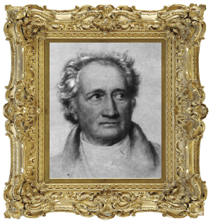

The Pscyhology of Colour
A Scrolling Investigation
The birth of colour theory came about through Leone Battista Alberti c. 1435 and was expanded upon by Leonardo Da Vinci in his notebooks.
Their pioneering work in the field went on to inspire countless others to explain the effects of colour on the human experience, probably most notably in the theories of Johann Wolfgang Von Goethe
